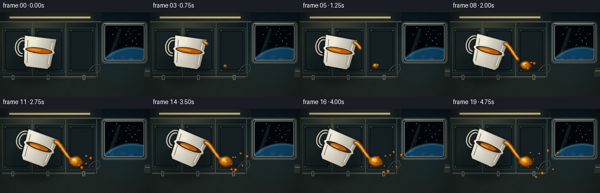
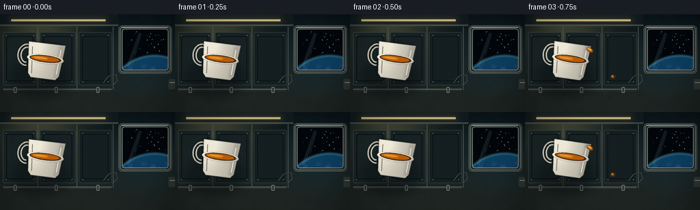
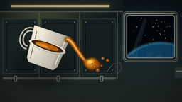
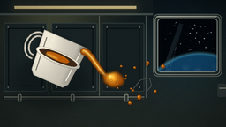

CODING AGENTS AS PIXEL WORLD MODELS
traex/DeepSeek-V4.1-Flash · phygen_002
点击播放 · 原生 RGB 像素
逐轮保存的候选
回放视频、检查图与代码变化。
每份候选均可单独播放。实际图片检查记录在下方工具轨迹中。
候选 01播放与检查图
点击播放 · 原生 RGB 像素


展开代码变化
--- 上一保存版本
+++ 本次保存版本
@@ -0,0 +1,744 @@
+"""Procedural renderer for a microgravity oil-pour shot."""
+
+from __future__ import annotations
+
+import math
+from pathlib import Path
+
+import numpy as np
+from PIL import Image, ImageChops, ImageDraw, ImageFilter
+
+import artifact_io
+
+
+W, H = 256, 144
+SS = 4
+WW, HH = W * SS, H * SS
+TAU = math.tau
+
+
+def clamp(value: float, lo: float = 0.0, hi: float = 1.0) -> float:
+ return max(lo, min(hi, value))
+
+
+def smoothstep(edge0: float, edge1: float, value: float) -> float:
+ t = clamp((value - edge0) / (edge1 - edge0))
+ return t * t * (3.0 - 2.0 * t)
+
+
+def mix(a, b, t):
+ return a + (b - a) * t
+
+
+def pts_scaled(points):
+ return [(int(round(x * SS)), int(round(y * SS))) for x, y in points]
+
+
+def ellipse_points(cx, cy, rx, ry, count=96, angle=0.0):
+ c, s = math.cos(angle), math.sin(angle)
+ points = []
+ for i in range(count):
+ theta = TAU * i / count
+ x = rx * math.cos(theta)
+ y = ry * math.sin(theta)
+ points.append((cx + c * x - s * y, cy + s * x + c * y))
+ return points
+
+
+def transform_point(point, pivot, angle):
+ x, y = point
+ px, py = pivot
+ c, s = math.cos(angle), math.sin(angle)
+ return (px + c * x - s * y, py + s * x + c * y)
+
+
+def transform_points(points, pivot, angle):
+ return [transform_point(point, pivot, angle) for point in points]
+
+
+def polygon_mask(points, fill=255):
+ mask = Image.new("L", (WW, HH), 0)
+ ImageDraw.Draw(mask).polygon(pts_scaled(points), fill=fill)
+ return mask
+
+
+def ellipse_mask(cx, cy, rx, ry, angle=0.0, fill=255):
+ return polygon_mask(ellipse_points(cx, cy, rx, ry, angle=angle), fill)
+
+
+def rounded_mask(box, radius, fill=255):
+ mask = Image.new("L", (WW, HH), 0)
+ x0, y0, x1, y1 = [int(round(v * SS)) for v in box]
+ ImageDraw.Draw(mask).rounded_rectangle(
+ (x0, y0, x1, y1), radius=int(round(radius * SS)), fill=fill
+ )
+ return mask
+
+
+def mask_union(*masks):
+ result = masks[0].copy()
+ for mask in masks[1:]:
+ result = ImageChops.lighter(result, mask)
+ return result
+
+
+def masked_solid(mask, color):
+ layer = Image.new("RGBA", (WW, HH), tuple(color[:3]) + (0,))
+ alpha = mask
+ if len(color) == 4:
+ alpha = ImageChops.multiply(mask, Image.new("L", (WW, HH), color[3]))
+ layer.putalpha(alpha)
+ return layer
+
+
+def add_mask_layer(base, mask, color):
+ base.alpha_composite(masked_solid(mask, color))
+
+
+def gradient_rgb(x0, y0, x1, y1, top, bottom):
+ yy = np.linspace(0.0, 1.0, HH, dtype=np.float32)[:, None]
+ xx = np.linspace(0.0, 1.0, WW, dtype=np.float32)[None, :]
+ blend = np.clip((yy - y0) / max(1e-6, y1 - y0), 0.0, 1.0)
+ rgb = np.empty((HH, WW, 3), dtype=np.float32)
+ for channel in range(3):
+ rgb[:, :, channel] = mix(top[channel], bottom[channel], blend)
+ return rgb, xx, yy
+
+
+def screen_softlight(base: Image.Image, color, strength=1.0):
+ arr = np.asarray(base.convert("RGB"), dtype=np.float32) / 255.0
+ c = np.asarray(color, dtype=np.float32) / 255.0
+ arr = 1.0 - (1.0 - arr) * (1.0 - c[None, None, :] * strength)
+ return Image.fromarray(np.uint8(np.clip(arr, 0.0, 1.0) * 255.0), "RGB")
+
+
+def draw_soft_ellipse(base, box, color, blur=1.5):
+ mask = rounded_mask(box, min(box[2] - box[0], box[3] - box[1]) / 2)
+ mask = mask.filter(ImageFilter.GaussianBlur(blur * SS))
+ add_mask_layer(base, mask, color)
+
+
+def make_background(frame_index: int):
+ t = frame_index / 19.0
+ rgb, xn, yn = gradient_rgb(
+ 0.0,
+ 0.0,
+ 1.0,
+ 1.0,
+ (11, 20, 24),
+ (35, 43, 39),
+ )
+
+ # A cool cabin light and a warm work lamp give the metal some separation.
+ radial = np.exp(
+ -(
+ ((xn - 0.22) / 0.24) ** 2
+ + ((yn - 0.18) / 0.28) ** 2
+ )
+ )
+ rgb += radial[:, :, None] * np.array([44, 40, 22], dtype=np.float32)
+ window_glow = np.exp(
+ -(
+ ((xn - 0.83) / 0.18) ** 2
+ + ((yn - 0.42) / 0.35) ** 2
+ )
+ )
+ rgb += window_glow[:, :, None] * np.array([2, 12, 19], dtype=np.float32)
+
+ # Sparse grain in the darker areas reads as the texture of cabin padding.
+ rng = np.random.default_rng(22)
+ coarse = rng.normal(0.0, 1.0, (18, 32)).astype(np.float32)
+ coarse = np.asarray(
+ Image.fromarray(np.uint8(np.clip(coarse * 18.0 + 128.0, 0, 255))).resize(
+ (WW, HH), Image.Resampling.BICUBIC
+ ),
+ dtype=np.float32,
+ )
+ rgb += (coarse[:, :, None] - 128.0) * 0.028
+
+ dx = 0.45 * math.sin(TAU * t + 0.35)
+ dy = 0.22 * math.sin(TAU * t * 0.7 + 1.1)
+
+ base = Image.fromarray(np.uint8(np.clip(rgb, 0, 255)), "RGB").convert("RGBA")
+ draw = ImageDraw.Draw(base)
+
+ def sbox(box):
+ return tuple(int(round(v * SS)) for v in box)
+
+ # Overhead structural beam and a recessed strip light.
+ draw.rectangle(sbox((0, 0, 173, 17)), fill=(18, 28, 31, 255))
+ draw.rectangle(sbox((0, 15, 173, 17)), fill=(65, 77, 75, 210))
+ draw.rectangle(sbox((16 + dx, 7 + dy, 154 + dx, 10 + dy)), fill=(196, 181, 130, 255))
+ glow = rounded_mask((12 + dx, 3 + dy, 158 + dx, 14 + dy), 5)
+ glow = glow.filter(ImageFilter.GaussianBlur(4.5 * SS))
+ add_mask_layer(base, glow, (232, 191, 99, 34))
+
+ # Rack panels on the left and rear wall.
+ panel_specs = [
+ ((4, 26, 53, 104), (27, 38, 39, 255), (57, 67, 64, 255)),
+ ((58, 26, 110, 104), (24, 34, 36, 255), (51, 62, 61, 255)),
+ ((115, 26, 163, 104), (21, 31, 33, 255), (45, 56, 55, 255)),
+ ]
+ for box, fill, edge in panel_specs:
+ box_shift = (box[0] + dx, box[1] + dy, box[2] + dx, box[3] + dy)
+ draw.rounded_rectangle(sbox(box_shift), radius=2 * SS, fill=fill, outline=edge, width=SS)
+ inset = (box_shift[0] + 5, box_shift[1] + 6, box_shift[2] - 5, box_shift[3] - 6)
+ draw.rounded_rectangle(sbox(inset), radius=SS, outline=(8, 15, 17, 160), width=SS)
+
+ # Panel seams and fasteners.
+ for x in (55, 112, 165):
+ draw.line(
+ pts_scaled([(x + dx, 18 + dy), (x + dx, 111 + dy)]),
+ fill=(82, 91, 86, 135),
+ width=SS,
+ )
+ for x in (9, 49, 64, 105, 121, 158):
+ for y in (31, 99):
+ draw.ellipse(
+ sbox((x + dx - 0.65, y + dy - 0.65, x + dx + 0.65, y + dy + 0.65)),
+ fill=(137, 137, 119, 210),
+ )
+
+ # A low handrail behind the floating cup.
+ rail_y = 111 + dy
+ draw.line(
+ pts_scaled([(3 + dx, rail_y), (164 + dx, rail_y)]),
+ fill=(25, 31, 31, 255),
+ width=int(4.0 * SS),
+ )
+ draw.line(
+ pts_scaled([(4 + dx, rail_y - 1.1), (163 + dx, rail_y - 1.1)]),
+ fill=(127, 132, 120, 230),
+ width=int(1.0 * SS),
+ )
+ draw.line(
+ pts_scaled([(4 + dx, rail_y + 1.0), (163 + dx, rail_y + 1.0)]),
+ fill=(54, 61, 59, 240),
+ width=SS,
+ )
+ for x in (22, 82, 143):
+ draw.rounded_rectangle(
+ sbox((x + dx - 2.2, rail_y - 4.2, x + dx + 2.2, rail_y + 4.2)),
+ radius=SS,
+ fill=(45, 52, 50, 255),
+ outline=(124, 128, 116, 210),
+ width=SS,
+ )
+
+ # A cable loop adds scale without competing with the oil.
+ cable_points = [
+ (151 + dx, 101 + dy),
+ (159 + dx, 91 + dy),
+ (169 + dx, 89 + dy),
+ (171 + dx, 98 + dy),
+ (164 + dx, 106 + dy),
+ ]
+ draw.line(
+ pts_scaled(cable_points),
+ fill=(9, 15, 16, 230),
+ width=int(1.4 * SS),
+ joint="curve",
+ )
+ draw.line(
+ pts_scaled([(x, y - 0.35) for x, y in cable_points]),
+ fill=(71, 80, 76, 155),
+ width=SS,
+ joint="curve",
+ )
+
+ # Cupola window with Earth below and stars above.
+ outer = (173 + dx, 16 + dy, 251 + dx, 87 + dy)
+ inner = (178 + dx, 21 + dy, 246 + dx, 82 + dy)
+ draw.rounded_rectangle(
+ sbox(outer), radius=6 * SS, fill=(32, 41, 42, 255), outline=(93, 101, 94, 255), width=SS
+ )
+ draw.rounded_rectangle(
+ sbox((outer[0] + 2, outer[1] + 2, outer[2] - 2, outer[3] - 2)),
+ radius=5 * SS,
+ outline=(126, 133, 122, 170),
+ width=SS,
+ )
+ draw.rounded_rectangle(sbox(inner), radius=4 * SS, fill=(2, 7, 12, 255))
+
+ window_mask = rounded_mask(inner, 4)
+ space = Image.new("RGBA", (WW, HH), (0, 0, 0, 0))
+ star_rng = np.random.default_rng(91)
+ for _ in range(28):
+ sx = star_rng.uniform(inner[0] + 3, inner[2] - 3)
+ sy = star_rng.uniform(inner[1] + 3, inner[3] - 25)
+ rr = star_rng.choice([0.25, 0.35, 0.5])
+ brightness = int(star_rng.uniform(115, 235))
+ ImageDraw.Draw(space).ellipse(
+ sbox((sx - rr, sy - rr, sx + rr, sy + rr)),
+ fill=(brightness, brightness, min(255, brightness + 18), 255),
+ )
+
+ earth = Image.new("RGBA", (WW, HH), (0, 0, 0, 0))
+ earth_mask = Image.new("L", (WW, HH), 0)
+ ecx, ecy, er = 226 + dx, 130 + dy, 69
+ ImageDraw.Draw(earth_mask).ellipse(sbox((ecx - er, ecy - er, ecx + er, ecy + er)), fill=255)
+ earth_arr = np.zeros((HH, WW, 4), dtype=np.uint8)
+ xg = np.linspace(0, W, WW, dtype=np.float32)[None, :]
+ yg = np.linspace(0, H, HH, dtype=np.float32)[:, None]
+ rnorm = np.sqrt(((xg - ecx) / er) ** 2 + ((yg - ecy) / er) ** 2)
+ depth = np.clip((yg - (ecy - er)) / (2.0 * er), 0.0, 1.0)
+ ocean = np.stack(
+ [
+ mix(14, 6, depth) + 12 * (1 - rnorm),
+ mix(67, 25, depth) + 15 * (1 - rnorm),
+ mix(102, 56, depth) + 20 * (1 - rnorm),
+ ],
+ axis=-1,
+ )
+ cloud = (
+ np.sin(xg * 0.38 + yg * 0.13)
+ + np.sin(xg * 0.17 - yg * 0.31 + 1.4)
+ + 1.8
+ ) / 3.8
+ cloud = np.clip((cloud - 0.52) * 3.2, 0.0, 1.0) * np.clip((depth - 0.08) * 2.0, 0.0, 1.0)
+ ocean = ocean * (1.0 - cloud[:, :, None] * 0.74) + 232.0 * cloud[:, :, None] * 0.74
+ earth_arr[:, :, :3] = np.uint8(np.clip(ocean, 0, 255))
+ earth_arr[:, :, 3] = 255
+ earth = Image.fromarray(earth_arr, "RGBA")
+ earth.putalpha(ImageChops.multiply(earth.getchannel("A"), earth_mask))
+ space.alpha_composite(earth)
+
+ atmosphere = Image.new("L", (WW, HH), 0)
+ ImageDraw.Draw(atmosphere).ellipse(
+ sbox((ecx - er - 1.2, ecy - er - 1.2, ecx + er + 1.2, ecy + er + 1.2)),
+ outline=255,
+ width=int(1.5 * SS),
+ )
+ atmosphere = atmosphere.filter(ImageFilter.GaussianBlur(1.1 * SS))
+ atmosphere = ImageChops.multiply(atmosphere, window_mask)
+ add_mask_layer(space, atmosphere, (101, 203, 232, 190))
+
+ space.putalpha(ImageChops.multiply(space.getchannel("A"), window_mask))
+ base.alpha_composite(space)
+
+ # Glass reflection and a bright rim on the cupola.
+ glass = Image.new("RGBA", (WW, HH), (0, 0, 0, 0))
+ gd = ImageDraw.Draw(glass)
+ gd.line(
+ pts_scaled(
+ [
+ (inner[0] + 9 + dx, inner[3] - 5 + dy),
+ (inner[0] + 27 + dx, inner[1] + 6 + dy),
+ ]
+ ),
+ fill=(167, 221, 231, 25),
+ width=int(5.0 * SS),
+ )
+ gd.line(
+ pts_scaled(
+ [
+ (inner[0] + 14 + dx, inner[3] - 3 + dy),
+ (inner[0] + 28 + dx, inner[1] + 9 + dy),
+ ]
+ ),
+ fill=(210, 242, 240, 22),
+ width=int(1.2 * SS),
+ )
+ glass.putalpha(ImageChops.multiply(glass.getchannel("A"), window_mask))
+ base.alpha_composite(glass)
+ draw.rounded_rectangle(
+ sbox(inner),
+ radius=4 * SS,
+ outline=(144, 154, 146, 180),
+ width=SS,
+ )
+ draw.line(
+ pts_scaled([(outer[0] + 4, outer[1] + 3), (outer[2] - 6, outer[1] + 3)]),
+ fill=(184, 188, 171, 145),
+ width=SS,
+ )
+
+ # A small strip of visible docking hardware at the far right.
+ draw.rounded_rectangle(sbox((246 + dx, 95 + dy, 256 + dx, 110 + dy)), radius=2 * SS, fill=(48, 57, 56, 255))
+ draw.line(
+ pts_scaled([(248 + dx, 100 + dy), (256 + dx, 100 + dy)]),
+ fill=(156, 156, 135, 190),
+ width=SS,
+ )
+
+ # Gentle vignette keeps the eye on the cup and oil.
+ vignette = np.clip(
+ 1.05
+ - 0.42 * (((xn - 0.48) / 0.72) ** 2 + ((yn - 0.46) / 0.82) ** 2),
+ 0.58,
+ 1.02,
+ )
+ arr = np.asarray(base.convert("RGB"), dtype=np.float32)
+ arr *= vignette[:, :, None]
+ return Image.fromarray(np.uint8(np.clip(arr, 0, 255)), "RGB").convert("RGBA"), (dx, dy)
+
+
+def fill_cup_mask(base, mask, pivot, color_dark, color_light, texture_seed):
+ xg = np.linspace(0, W, WW, dtype=np.float32)[None, :]
+ yg = np.linspace(0, H, HH, dtype=np.float32)[:, None]
+ px, py = pivot
+ xn = (xg - px) / 42.0
+ yn = (yg - py) / 72.0
+ shade = np.clip(0.73 - 0.18 * xn - 0.12 * yn, 0.18, 1.0)
+ hot = np.exp(-(((xg - px + 17) / 24.0) ** 2 + ((yg - py + 24) / 38.0) ** 2))
+ shade = np.clip(shade + 0.27 * hot, 0.0, 1.0)
+ rgb = np.asarray(color_dark, dtype=np.float32)[None, None, :] * (1.0 - shade[:, :, None])
+ rgb += np.asarray(color_light, dtype=np.float32)[None, None, :] * shade[:, :, None]
+
+ rng = np.random.default_rng(texture_seed)
+ fine = rng.normal(0.0, 2.3, (HH, WW, 1)).astype(np.float32)
+ rgb += fine
+ layer = Image.fromarray(np.uint8(np.clip(rgb, 0, 255)), "RGB").convert("RGBA")
+ layer.putalpha(mask)
+ base.alpha_composite(layer)
+
+
+def draw_cup(base, frame_index):
+ t = frame_index / 19.0
+ bob_x = 0.55 * math.sin(TAU * t * 0.52 + 0.4)
+ bob_y = 0.30 * math.sin(TAU * t * 0.42 + 1.0)
+ pivot = (66.0 + bob_x, 65.5 + bob_y)
+ angle_deg = 7.0 + 16.5 * smoothstep(0.02, 0.82, t)
+ angle = math.radians(angle_deg)
+
+ # Soft contact shadow on the rear wall.
+ shadow_mask = ellipse_mask(pivot[0] - 7, pivot[1] + 27, 43, 31)
+ shadow_mask = shadow_mask.filter(ImageFilter.GaussianBlur(7.0 * SS))
+ add_mask_layer(base, shadow_mask, (3, 8, 9, 92))
+
+ body_local = [
+ (-27, -23),
+ (27, -23),
+ (22.5, 23.5),
+ (18.0, 29.0),
+ (-18.0, 29.0),
+ (-22.5, 23.5),
+ ]
+ body_points = transform_points(body_local, pivot, angle)
+ body_mask = polygon_mask(body_points)
+
+ # Handle is built as a thick arc with the center removed.
+ handle_points = []
+ for i in range(41):
+ theta = math.radians(mix(82, 278, i / 40.0))
+ handle_points.append(
+ transform_point((-28.0 + 10.2 * math.cos(theta), -3.0 + 13.4 * math.sin(theta)), pivot, angle)
+ )
+ handle_mask = Image.new("L", (WW, HH), 0)
+ hd = ImageDraw.Draw(handle_mask)
+ hp = pts_scaled(handle_points)
+ hd.line(hp, fill=255, width=int(6.5 * SS), joint="curve")
+ hd.line(hp, fill=0, width=int(2.7 * SS), joint="curve")
+
+ handle_shadow = handle_mask.filter(ImageFilter.GaussianBlur(1.8 * SS))
+ add_mask_layer(base, handle_shadow.transform((WW, HH), Image.Transform.AFFINE, (1, 0, 1.0 * SS, 0, 1, 1.5 * SS)), (8, 12, 12, 75))
+ fill_cup_mask(base, handle_mask, pivot, (84, 82, 75), (221, 215, 198), 12)
+ add_mask_layer(base, handle_mask.filter(ImageFilter.FIND_EDGES).filter(ImageFilter.GaussianBlur(0.35 * SS)), (38, 39, 36, 165))
+
+ body_shadow = body_mask.filter(ImageFilter.GaussianBlur(2.0 * SS))
+ add_mask_layer(
+ base,
+ body_shadow.transform((WW, HH), Image.Transform.AFFINE, (1, 0, 1.4 * SS, 0, 1, 1.8 * SS)),
+ (5, 9, 10, 100),
+ )
+ fill_cup_mask(base, body_mask, pivot, (89, 87, 79), (239, 233, 216), 31)
+
+ # Ceramic side shading and bevel lines.
+ right_shadow = polygon_mask(
+ transform_points([(18, -21), (27, -23), (22.5, 23.5), (15, 27)], pivot, angle)
+ ).filter(ImageFilter.GaussianBlur(1.5 * SS))
+ add_mask_layer(base, right_shadow, (67, 65, 59, 45))
+ for line_local, color in [
+ ([(-21, -16), (-17.5, 23)], (104, 101, 91, 90)),
+ ([(21, -16), (18.5, 21)], (255, 250, 230, 95)),
+ ]:
+ ImageDraw.Draw(base).line(
+ pts_scaled(transform_points(line_local, pivot, angle)),
+ fill=color,
+ width=SS,
+ )
+
+ body_outline = body_mask.filter(ImageFilter.FIND_EDGES).filter(ImageFilter.GaussianBlur(0.45 * SS))
+ add_mask_layer(base, body_outline, (46, 46, 42, 175))
+
+ # Cup rim and dark inner wall.
+ rim_outer = polygon_mask(ellipse_points(pivot[0], pivot[1], 27, 7, 112, angle))
+ fill_cup_mask(base, rim_outer, pivot, (101, 99, 91), (246, 240, 223), 41)
+ rim_inner = polygon_mask(ellipse_points(pivot[0], pivot[1] - 0.3, 23.2, 5.2, 112, angle))
+ add_mask_layer(base, rim_inner, (62, 39, 22, 255))
+
+ # Oil remaining in the cup loses volume over the shot.
+ remaining = 1.0 - 0.34 * smoothstep(0.08, 0.95, t)
+ oil_rx = 21.0 * remaining
+ oil_ry = 3.9 * mix(0.78, 1.0, remaining)
+ oil_surface = polygon_mask(
+ ellipse_points(pivot[0] - 0.4, pivot[1] - 0.5, oil_rx, oil_ry, 112, angle)
+ )
+ oil_color = Image.new("RGBA", (WW, HH), (184, 91, 8, 255))
+ oil_color.putalpha(oil_surface)
+ base.alpha_composite(oil_color)
+ surface_hi = polygon_mask(
+ ellipse_points(pivot[0] - 7.0, pivot[1] - 1.7, oil_rx * 0.53, max(0.7, oil_ry * 0.34), 64, angle)
+ ).filter(ImageFilter.GaussianBlur(0.8 * SS))
+ add_mask_layer(base, surface_hi, (255, 204, 85, 165))
+
+ # Rim highlights.
+ rim_outline = rim_outer.filter(ImageFilter.FIND_EDGES).filter(ImageFilter.GaussianBlur(0.28 * SS))
+ add_mask_layer(base, rim_outline, (67, 66, 59, 180))
+ lip_arc = []
+ for i in range(37):
+ theta = math.radians(mix(191, 345, i / 36.0))
+ lip_arc.append(
+ transform_point((26.3 * math.cos(theta), 6.4 * math.sin(theta)), pivot, angle)
+ )
+ ImageDraw.Draw(base).line(pts_scaled(lip_arc), fill=(255, 248, 224, 205), width=int(0.9 * SS), joint="curve")
+
+ spout = transform_point((24.0, -18.2), pivot, angle)
+ return spout, angle_deg
+
+
+def cubic_bezier(p0, p1, p2, p3, s):
+ omt = 1.0 - s
+ return (
+ omt**3 * p0[0] + 3 * omt**2 * s * p1[0] + 3 * omt * s**2 * p2[0] + s**3 * p3[0],
+ omt**3 * p0[1] + 3 * omt**2 * s * p1[1] + 3 * omt * s**2 * p2[1] + s**3 * p3[1],
+ )
+
+
+def stroke_variable_mask(points, radii):
+ mask = Image.new("L", (WW, HH), 0)
+ draw = ImageDraw.Draw(mask)
+ for i, ((x, y), radius) in enumerate(zip(points, radii)):
+ rr = max(0.35, radius)
+ box = (
+ int(round((x - rr) * SS)),
+ int(round((y - rr) * SS)),
+ int(round((x + rr) * SS)),
+ int(round((y + rr) * SS)),
+ )
+ draw.ellipse(box, fill=255)
+ if i:
+ x0, y0 = points[i - 1]
+ draw.line(
+ pts_scaled([(x0, y0), (x, y)]),
+ fill=255,
+ width=max(1, int(round(2.0 * min(radius, radii[i - 1]) * SS))),
+ )
+ return mask
+
+
+def offset_points(points, dx, dy):
+ return [(x + dx, y + dy) for x, y in points]
+
+
+def draw_stream_and_blob(base, spout, frame_index):
+ t = frame_index / 19.0
+ flow = smoothstep(0.10, 0.58, t)
+ if flow <= 0.015:
+ return None
+
+ main_cx = 128.0 + 1.4 * flow + 0.45 * math.sin(TAU * t * 0.8)
+ main_cy = 91.5 - 1.1 * flow + 0.35 * math.cos(TAU * t * 0.65)
+ rx = 2.0 + 8.0 * flow
+ ry = 1.8 + 6.5 * flow
+
+ p0 = spout
+ p1 = (spout[0] + 8.5, spout[1] + 2.0)
+ p2 = (110.0, 78.0)
+ p3 = (main_cx - rx * 0.66, main_cy - ry * 0.18)
+
+ s_max = 0.13 + 0.87 * flow
+ samples = 72
+ ss = np.linspace(0.0, s_max, samples)
+ centerline = [cubic_bezier(p0, p1, p2, p3, float(s)) for s in ss]
+ radii = []
+ for s in ss:
+ base_width = (2.75 + 1.15 * (1.0 - s)) * (0.68 + 0.32 * flow)
+ capillary = 0.30 * math.sin(TAU * 5.0 * s - 1.4 - 1.8 * t)
+ tip_bead = 1.1 * (1.0 - flow) * smoothstep(0.70, 1.0, s)
+ radii.append(base_width + capillary + tip_bead)
+
+ stream_mask = stroke_variable_mask(centerline, radii)
+ stream_mask = stream_mask.filter(ImageFilter.GaussianBlur(0.22 * SS))
+ shadow = stream_mask.filter(ImageFilter.GaussianBlur(2.0 * SS))
+ shadow = shadow.transform((WW, HH), Image.Transform.AFFINE, (1, 0, 1.1 * SS, 0, 1, 1.5 * SS))
+ add_mask_layer(base, shadow, (22, 12, 5, 95))
+
+ # Dark body, mid-tone transmission, then a narrow specular line.
+ add_mask_layer(base, stream_mask, (137, 64, 4, 236))
+ inner_points = offset_points(centerline, -0.35, -0.55)
+ inner_radii = [max(0.65, r * 0.57) for r in radii]
+ inner_mask = stroke_variable_mask(inner_points, inner_radii)
+ inner_mask = ImageChops.multiply(inner_mask, stream_mask)
+ inner_mask = inner_mask.filter(ImageFilter.GaussianBlur(0.38 * SS))
+ add_mask_layer(base, inner_mask, (244, 151, 27, 155))
+
+ spec_points = offset_points(centerline, -0.65, -1.0)
+ spec_radii = [max(0.25, r * 0.18) for r in radii]
+ spec_mask = stroke_variable_mask(spec_points, spec_radii)
+ spec_mask = ImageChops.multiply(spec_mask, stream_mask)
+ spec_mask = spec_mask.filter(ImageFilter.GaussianBlur(0.35 * SS))
+ add_mask_layer(base, spec_mask, (255, 231, 142, 195))
+
+ edge = stream_mask.filter(ImageFilter.FIND_EDGES).filter(ImageFilter.GaussianBlur(0.35 * SS))
+ add_mask_layer(base, edge, (92, 40, 0, 105))
+
+ # A rounded, slightly asymmetric main globule receives the stream.
+ lobes = [
+ (main_cx, main_cy, rx, ry),
+ (main_cx - rx * 0.60, main_cy - ry * 0.12, rx * 0.58, ry * 0.76),
+ (main_cx + rx * 0.58, main_cy + ry * 0.16, rx * 0.54, ry * 0.65),
+ (main_cx + rx * 0.12, main_cy - ry * 0.55, rx * 0.52, ry * 0.52),
+ ]
+ blob_mask = mask_union(
+ *[ellipse_mask(cx, cy, erx, ery, angle=0.10 * math.sin(TAU * t + i)) for i, (cx, cy, erx, ery) in enumerate(lobes)]
+ )
+ blob_mask = blob_mask.filter(ImageFilter.GaussianBlur(1.2 * SS))
+
+ blob_shadow = blob_mask.filter(ImageFilter.GaussianBlur(3.0 * SS))
+ blob_shadow = blob_shadow.transform((WW, HH), Image.Transform.AFFINE, (1, 0, 1.7 * SS, 0, 1, 2.1 * SS))
+ add_mask_layer(base, blob_shadow, (18, 10, 4, 112))
+
+ xg = np.linspace(0, W, WW, dtype=np.float32)[None, :]
+ yg = np.linspace(0, H, HH, dtype=np.float32)[:, None]
+ rnorm = np.sqrt(((xg - main_cx) / max(1.0, rx)) ** 2 + ((yg - main_cy) / max(1.0, ry)) ** 2)
+ highlight = np.exp(-(((xg - (main_cx - rx * 0.30)) / max(1.0, rx * 0.62)) ** 2 + ((yg - (main_cy - ry * 0.38)) / max(1.0, ry * 0.72)) ** 2))
+ color = np.zeros((HH, WW, 3), dtype=np.float32)
+ color[:] = np.array([149, 67, 3], dtype=np.float32)
+ color += (1.0 - np.clip(rnorm, 0, 1))[:, :, None] * np.array([55, 45, 15], dtype=np.float32)
+ color += highlight[:, :, None] * np.array([86, 100, 40], dtype=np.float32)
+ blob_layer = Image.fromarray(np.uint8(np.clip(color, 0, 255)), "RGB").convert("RGBA")
+ blob_layer.putalpha(blob_mask)
+ base.alpha_composite(blob_layer)
+
+ blob_edge = blob_mask.filter(ImageFilter.FIND_EDGES).filter(ImageFilter.GaussianBlur(0.55 * SS))
+ add_mask_layer(base, blob_edge, (82, 35, 0, 155))
+
+ hi_mask = ellipse_mask(
+ main_cx - rx * 0.31,
+ main_cy - ry * 0.36,
+ max(0.7, rx * 0.31),
+ max(0.55, ry * 0.24),
+ angle=-0.18,
+ ).filter(ImageFilter.GaussianBlur(0.85 * SS))
+ hi_mask = ImageChops.multiply(hi_mask, blob_mask)
+ add_mask_layer(base, hi_mask, (255, 210, 82, 188))
+ tiny_hi = ellipse_mask(
+ main_cx - rx * 0.43,
+ main_cy - ry * 0.48,
+ max(0.45, rx * 0.10),
+ max(0.35, ry * 0.08),
+ angle=-0.25,
+ ).filter(ImageFilter.GaussianBlur(0.35 * SS))
+ add_mask_layer(base, ImageChops.multiply(tiny_hi, blob_mask), (255, 246, 183, 220))
+
+ # A few enclosed air bubbles make the liquid read as viscous oil.
+ bubble_specs = [(-0.30, 0.12, 1.15), (0.20, 0.31, 0.82), (0.37, -0.20, 0.62)]
+ for idx, (bx, by, br) in enumerate(bubble_specs):
+ cx, cy = main_cx + bx * rx, main_cy + by * ry
+ ring = ellipse_mask(cx, cy, br * (1.0 + 0.12 * flow), br, angle=0.2 * idx)
+ add_mask_layer(base, ImageChops.multiply(ring.filter(ImageFilter.FIND_EDGES), blob_mask), (89, 44, 4, 170))
+ dot = ellipse_mask(cx - br * 0.2, cy - br * 0.25, max(0.22, br * 0.22), max(0.2, br * 0.22))
+ add_mask_layer(base, ImageChops.multiply(dot, blob_mask), (255, 216, 116, 160))
+
+ return main_cx, main_cy, rx, ry
+
+
+def draw_droplets(base, main_blob, frame_index):
+ if main_blob is None:
+ return
+ main_cx, main_cy, main_rx, main_ry = main_blob
+ specs = [
+ (4, 0.00, -0.22, 3.55, -0.35, 2.25),
+ (5, 0.16, 0.12, 2.75, -1.95, 1.72),
+ (6, -0.10, 0.22, 2.15, 1.85, 2.55),
+ (7, 0.22, 0.04, 3.85, 0.65, 1.48),
+ (8, -0.02, -0.18, 2.05, -0.72, 1.38),
+ (9, 0.18, 0.27, 1.72, 2.08, 1.88),
+ (10, 0.00, -0.05, 4.10, -1.55, 1.28),
+ (11, 0.26, 0.10, 2.48, 1.15, 1.12),
+ (12, -0.08, 0.19, 1.22, -2.15, 1.22),
+ (13, 0.13, -0.16, 3.05, 1.72, 0.98),
+ (14, 0.30, 0.26, 2.10, -1.15, 0.92),
+ (15, -0.12, -0.03, 1.45, 2.30, 0.84),
+ (16, 0.20, 0.12, 3.70, -0.50, 0.76),
+ (17, 0.02, 0.24, 2.35, 1.48, 0.72),
+ ]
+
+ for index, (birth, sx, sy, vx, vy, radius) in enumerate(specs):
+ age = frame_index - birth
+ if age < 0:
+ continue
+ # Small airflow curl bends the paths without introducing gravity.
+ curl = 0.035 * age * age * (1 if index % 2 else -1)
+ x = main_cx + sx * main_rx + vx * age - curl * 0.28
+ y = main_cy + sy * main_ry + vy * age + curl
+ r = radius * (0.86 + 0.14 * smoothstep(0.0, 3.0, age))
+ if x < -8 or x > W + 8 or y < -8 or y > H + 8:
+ continue
+
+ stretch = 1.0 + 0.10 * math.sin(index * 1.7)
+ shadow = ellipse_mask(x + 1.1, y + 1.4, r * stretch, r / stretch, angle=0.3)
+ add_mask_layer(base, shadow.filter(ImageFilter.GaussianBlur(1.7 * SS)), (20, 11, 4, 82))
+ body = ellipse_mask(x, y, r * stretch, r / stretch, angle=0.3)
+ add_mask_layer(base, body, (151, 69, 4, 235))
+ inner = ellipse_mask(
+ x - r * 0.16,
+ y - r * 0.20,
+ max(0.35, r * 0.58 * stretch),
+ max(0.30, r * 0.50 / stretch),
+ angle=0.3,
+ ).filter(ImageFilter.GaussianBlur(0.28 * SS))
+ add_mask_layer(base, ImageChops.multiply(inner, body), (240, 151, 26, 145))
+ spec = ellipse_mask(
+ x - r * 0.34,
+ y - r * 0.38,
+ max(0.18, r * 0.20),
+ max(0.16, r * 0.17),
+ angle=0.2,
+ ).filter(ImageFilter.GaussianBlur(0.22 * SS))
+ add_mask_layer(base, spec, (255, 235, 151, 210))
+ rim = body.filter(ImageFilter.FIND_EDGES).filter(ImageFilter.GaussianBlur(0.25 * SS))
+ add_mask_layer(base, rim, (85, 37, 0, 105))
+
+
+def finalize(base, frame_index):
+ # Mild depth-of-field separates the cup and oil from the station wall.
+ rgb = base.convert("RGB")
+ background_blur = rgb.filter(ImageFilter.GaussianBlur(0.18 * SS))
+ rgb = Image.blend(rgb, background_blur, 0.12)
+
+ arr = np.asarray(rgb, dtype=np.float32)
+ xg = np.linspace(0, W, WW, dtype=np.float32)[None, :]
+ yg = np.linspace(0, H, HH, dtype=np.float32)[:, None]
+ bloom = np.clip((arr[:, :, 0] - arr[:, :, 2]) / 255.0, 0, 1)
+ bloom *= np.exp(-(((xg - 0.50) / 0.35) ** 2 + ((yg - 0.63) / 0.32) ** 2))
+ arr += bloom[:, :, None] * np.array([10, 6, 1], dtype=np.float32)
+
+ rng = np.random.default_rng(300 + frame_index)
+ grain = rng.normal(0.0, 1.8, (HH, WW, 1)).astype(np.float32)
+ arr += grain
+ arr = np.uint8(np.clip(arr, 0, 255))
+ image = Image.fromarray(arr, "RGB").resize((W, H), Image.Resampling.LANCZOS)
+
+ # Slight optical softness at the very end, after supersampling.
+ image = image.filter(ImageFilter.GaussianBlur(0.18))
+ return np.asarray(image, dtype=np.uint8)
+
+
+def render_frame(frame_index):
+ background, _ = make_background(frame_index)
+ spout, _ = draw_cup(background, frame_index)
+ blob = draw_stream_and_blob(background, spout, frame_index)
+ draw_droplets(background, blob, frame_index)
+ return finalize(background, frame_index)
+
+
+def main():
+ case_dir = Path(__file__).resolve().parent
+ frames = np.stack([render_frame(index) for index in range(20)])
+ artifact_io.save(frames, case_dir)
+
+
+if __name__ == "__main__":
+ main()
可观测工具轨迹
实际执行的命令与返回图片。
命令 1exit 0
/bin/bash -c 'cat prompt.txt'
命令 2exit 0
/bin/bash -c 'cat GENERATION_RULES.md'
命令 3exit 0
/bin/bash -c 'cat task_spec.json'
命令 4exit 0
/bin/bash -c "find . -maxdepth 2 -type f -printf '%p\\n' | sort"
命令 5exit 0
/bin/bash -c "sed -n '1,240p' artifact_io.py"
命令 6exit 0
/bin/bash -c "sed -n '1,260p' player_template.html"
命令 7exit 0
/bin/bash -c "python - <<'PY'
import numpy, PIL
print('numpy', numpy.__version__)
print('PIL', PIL.__version__)
PY"命令 8exit 1
/bin/bash -c 'python generate.py'
命令 9exit 0
/bin/bash -c "rg -n \"\\.transform\\(\" generate.py"
命令 10exit 0
/bin/bash -c 'python generate.py'
命令 11exit 0
/bin/bash -c "python - <<'PY'
from pathlib import Path
from PIL import Image
import numpy as np
for p in [Path('frames/00.png'),Path('frames/10.png'),Path('frames/19.png')]:
im=np.asarray(Image.open(p))
print(p, im.shape, im.min(), im.max(), round(float(im.mean()),2))
print('files', sorted(x.name for x in Path('.').glob('*')))
print('frames', len(list(Path('frames').glob('*.png'))))
PY"视觉工具实际返回图片 1

视觉工具实际返回图片 2

视觉工具实际返回图片 3

保存候选 1 份；完成命令 11 次；可验证图片返回 3 张。原始 API 响应与完整日志保留在本地。